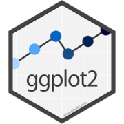
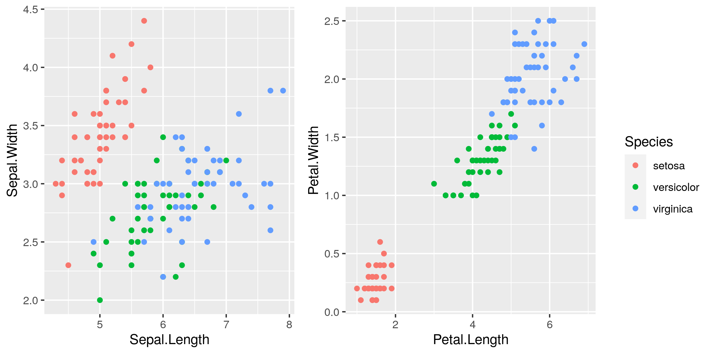
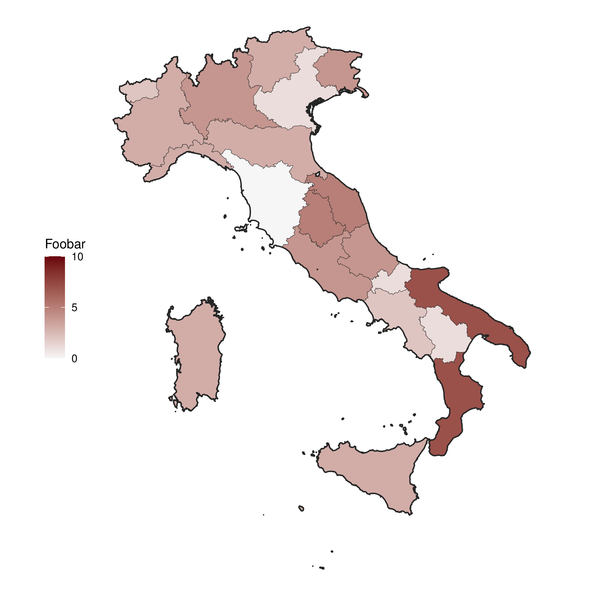

Table of Contents
ggplot2 notes


library(ggplot2) library(cowplot) a <- ggplot() + geom_point(data = iris, mapping = aes(x = Sepal.Length, y = Sepal.Width, colour = Species)) b <- ggplot() + geom_point(data = iris, mapping = aes(x = Petal.Length, y = Petal.Width, colour = Species)) legend <- get_legend(b + theme(legend.box.margin = margin(0, 0, 0, 12))) example_plot <- plot_grid(a + theme(legend.position = "none"), b + theme(legend.position = "none"), legend, ncol = 3, rel_widths = c(1,1,0.25)) ggsave("../resources/ggplot2-example-01.png", example_plot, width = 14.8, height = 10.5, units = "cm")
To include latex in any sort of text on a figure there is the latex2exp
package on CRAN which provides the TeX function. You can wrap most strings in
this before passing to plotting code. The vignette for this package describes
the expressions supported and has multiple examples.

Depending on the machine set up you may need to use convert to change a PDF of this map to a PNG.
library(ggplot2) library(ggspatial) library(GADMTools) library(purrr) library(dplyr) library(reshape2) library(ggmap) ## Define some parameters for how to draw and colour the figure my_breaks <- c(0,5,10) my_cols <- hcl.colors(n = length(my_breaks) - 1, palette = "reds 3", alpha = NULL, rev = TRUE, fixup = TRUE) map_country_line_colour <- "#252525" map_inline_thickness <- 0.1 map_outline_thickness <- 0.5 map_plot_background <- element_rect(colour = "#252525", fill = "#FFFFFF") ## Load the map data from GADM italy_sf <- gadm_sf_loadCountries("ITA", level = 1)$sf italy_sf$foobar <- rpois(n = nrow(italy_sf), lambda = 3) ## Include an additional level zero object for the country outline. italy_outline_sf <- gadm_sf_loadCountries("ITA", level = 0)$sf g <- ggplot() + geom_sf(data = italy_sf, mapping = aes(fill = foobar), colour = map_country_line_colour, size = map_inline_thickness) + geom_sf(data = italy_outline_sf, fill = NA, colour = map_country_line_colour, size = map_outline_thickness) + scale_fill_gradientn(breaks = my_breaks, colors = my_cols, limits = range(my_breaks)) + theme(plot.background = map_plot_background) + labs(fill = "Foobar") + theme_void() + theme(legend.position = "left") ggsave("../resources/ggplot2-example-02.pdf", g)